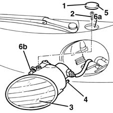

5540B37 main headlamp light beam - align
- Path
- Procedures > 55 ELECTRICAL EQUIPMENT > 5540 EXTERIOR LIGHTING > 5540B HEADLAMPS > 5540B37 main headlamp light beam - align
- Kind
- repair procedure (removal / refitting; the operation number is the code)
- Applies to
- all engines; production: fino a 05/99, da 09/03, da 06/99 a 03/02, da 04/02 a 08/03, fino a 05/04
- Interactive page
- https://sloeber94.github.io/elrnDB-fMltpl/en/#/2891930
Applies to: all engines; production: fino a 05/99, da 09/03, da 06/99 a 03/02, da 04/02 a 08/03, fino a 05/04
Prepare the vehicle complete with spare wheel, tools, fluids, fuel reserve.
Check that the tyre inflation pressure is correct.
Position the vehicle on a flat surface, perpendicular to a screen with an opaque surface, 10 metres away, on which the centres of the main beam headlamp projections have been marked in relation to the vehicle axis of symmetry (the same distance from the ground and from the vehicle axis of symmetry).
Switch on the main beam headlamps and check that the maximum illumination area corresponds to the marks on the screen. If necessary, correct the alignment, proceeding as follows.
Horizontal alignment.
1. Remove the cover.
2. Undo the bolt fixing the headlamp.
3. Gently extract the headlamp.
4. Adjust the headlamp horizontal alignment using the screw; temporarily reft the headlamp for the check.
When the horizontal alignment is completed, refit the headlamp and fix it using the bolt.
Fit the cover.
Vertical alignment.
5. Remove the cover.
6. Without removing the headlamp, work via the opening (6a) using a screwdriver on the pinion teeth (6b) to adjust the vertical alignment.
When the vertical alignment is completed, fit the cover.
